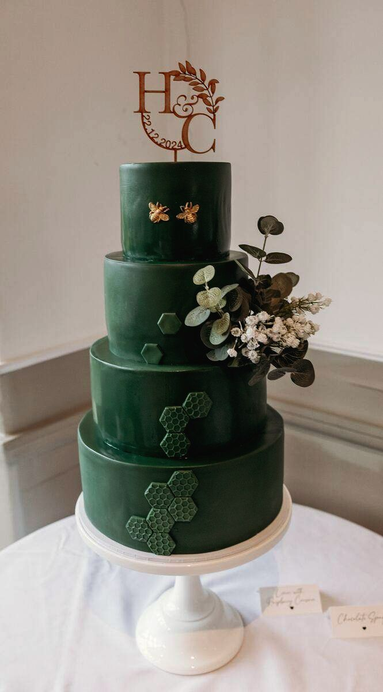

About
About Scott
I'm Scott, a wedding photographer based in Meltham, near Huddersfield.
I shoot in a natural, documentary style. I let the day happen, step in when a bit of direction helps, and keep the formal photos quick so you can get back to your guests.

Background
How I got here
I've been taking photos for around ten years, since my late teens. It started on holidays and at big family occasions, and grew into shooting just about everything: landscapes and wildlife around the Peak District, portraits, pets, sports events and drone work.
That mix is useful at a wedding. Portraits teach you how to put people at ease. Wildlife teaches patience and timing. Events teach you to read a room and be ready before the moment happens.
Since 2024 I've focused on weddings, bringing all of that together on the day that matters most.
I'm now taking bookings. Check your date →
On the day
What to expect
Planned
We agree your timeline and group shot list before the day, so nothing gets missed and the family photos are done quickly.
Calm
Plans change on wedding days. A late car or a shift in the weather is easy to work around, and you won't need to think about it.
Low-key
Most of the day is candid. I keep out of the way and photograph what happens rather than setting it up.

Outside weddings
A bit more about me
- Home: Meltham, on the edge of the Peak District, with plenty of places to explore on the doorstep.
- Outdoors: Walks, trips away and anything with a bit of adventure.
- Golf: Usually on the course when I get a free weekend.
Check your date
Send your date and venue, even if they're not confirmed yet, and I'll reply within 24 hours.
Check my date